Learn to write Cambridge-style pseudocode with short lessons, quick questions, and a built-in IDE that runs and checks your code. Choose your level:
Cambridge IGCSE & O Level Computer Science – variables, selection, loops, arrays, procedures and functions.
Cambridge International AS & A Level – validation, searching and sorting, functions, recursion and user-defined types.